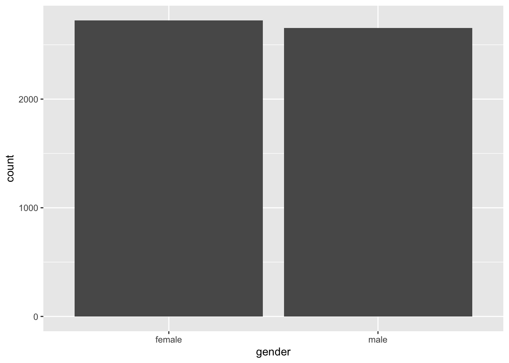
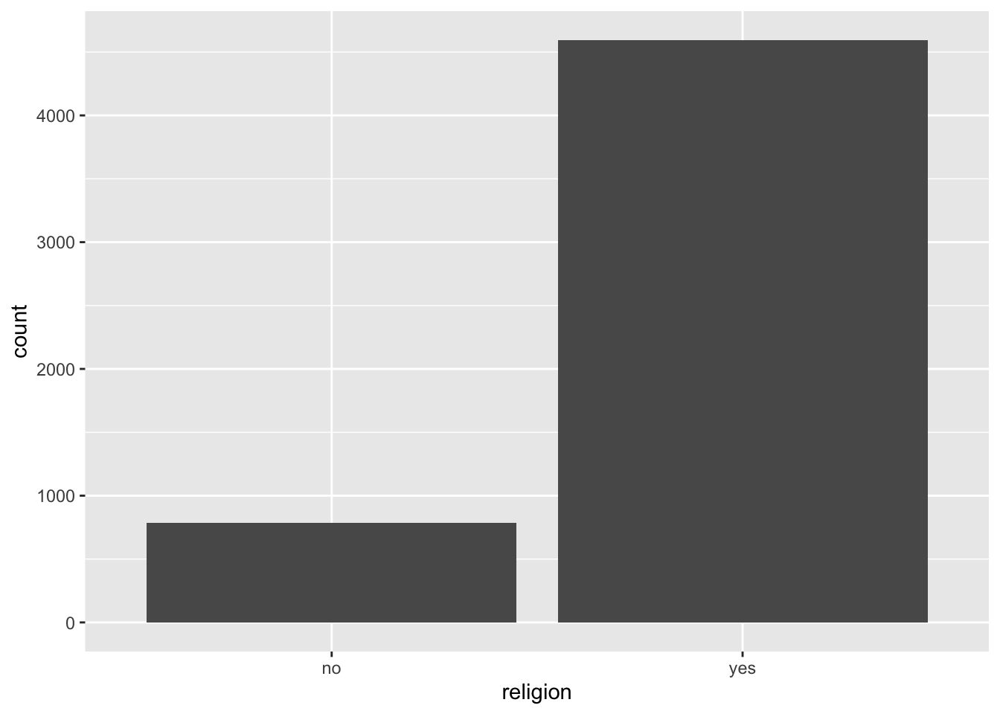
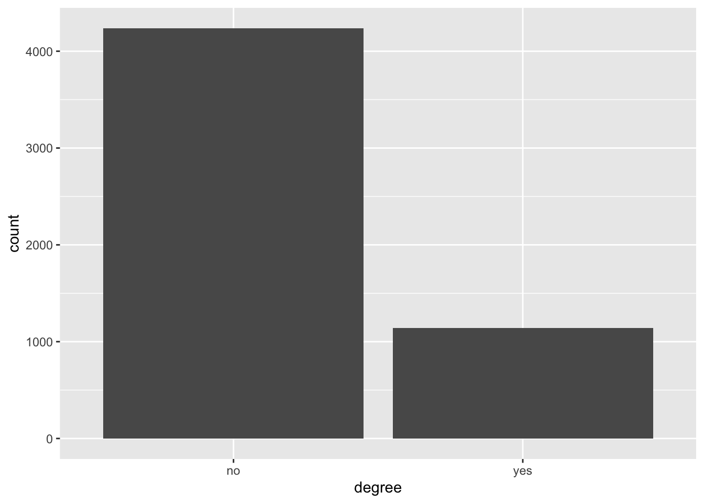

Portfolio 2
The Goal
Building off of the previous portfolio piece, I have selected a more complex data set named “WVS” from the carData package. This data set is a collection of data from the World Values Surveys spanning 1995-1997 in the United States, Australia, Norway, and Sweden. This data set revolves around survey data that is interested in public opinion towards a nation’s government. More specifically, researchers surveyed participants on how they viewed government involvement in poverty assistance. Answers span from “Too Little” to Too Much” with a middle option as well. This data set will provide a more complex understanding of public opinion in a wider context.
I plan to use this data set for a couple of portfolio pieces as I explore the data. For this portfolio piece 2, I want to gain a better understanding of the data within this data set through visualizations of demographic variables encapsulated in the survey data. To do so, I will use bar plots and frequency measures to understand where the survey data is coming from, who the data surveys, and the general trends across the data. Through this exploration, I will have a greater idea of what this survey wishes to understand and thus how I can continue to work with the data to frame certain questions of my own.
Stay tuned in portfolio piece 3 for further investigation.
The Data
Firstly, I want to view the data set to get an understanding of the size and characteristics. To do so, I will use both the view function to visualize the data set while also using nrow and ncol functions to measure the amount of rows and columns in the data set.
## [1] 5381## [1] 6In the WVS data set, there are 5381 rows which each represent an individual survey participant. There are also six columns in this data set that represent six variables including poverty, religion, degree, country, age, and gender.
Each variable is described as followed:
Poverty: “Do you think that what the government is doing for people in poverty in this country is about the right amount, too much, or too little?” (ordered): Too Little, About Right, Too Much. Religion: Member of a religion: no or yes. Degree: Held a university degree: no or yes. Country: Australia, Norway, Sweden, or USA. Age: in years. Gender: male or female.
The Product
To provide a clear understanding of where and from whom this data is collected, I will run some simple code to both measure and visualize the spread of certain demographics used in this survey data. I will start with the countries in which the data was collected.
## country n
## 1 Australia 1874
## 2 Norway 1127
## 3 Sweden 1003
## 4 USA 1377
As visualized in the bar plot above, the greatest number of survey responses comes from Australian participants followed by the United States and then Norway.
Next, let’s see about the gender of survey participants.
## gender n
## 1 female 2725
## 2 male 2656
As far as gender differences go, the data set is largely equal in male and female participants. Though there are slightly more responses from female participants than male participants.
## religion n
## 1 no 786
## 2 yes 4595
Religion on the other hand is quite an interesting demographic variable to measure. As I am unsure of the exact specificity of what the survey attributes to being religious, I cannot make substantive claims regarding this measure. Though I do find it every interesting that 85% of particpants across four different countries responded that they were religious.
## degree n
## 1 no 4238
## 2 yes 1143 Also very interestingly, the majority of participants, almost 80%, noted that they did not have a college degree. I would be interested to learn the occupations of the participants and whether this was more specific to one country or a general consensus. I might explore this later.
Lastly, let us investigate the main variable, “poverty”, to guage the general idea of what participants are answering to the main survey question.
## poverty n
## 1 Too Little 2708
## 2 About Right 1862
## 3 Too Much 811 According to the survey data. The majority of respondents, 50%, noted
that their government was doing too little for the poverty issue in
their country. A lesser majority of 35% noted that the government action
was about right in their country and a small percentage of 15% of
respondents responded that their country was doing too much. This
response is quite interesting to me as I am wondering what situations
might drive participants to respond with this answer.
According to the survey data. The majority of respondents, 50%, noted
that their government was doing too little for the poverty issue in
their country. A lesser majority of 35% noted that the government action
was about right in their country and a small percentage of 15% of
respondents responded that their country was doing too much. This
response is quite interesting to me as I am wondering what situations
might drive participants to respond with this answer.
The Interpretation
My curiosity and interest in this data set has grown since the beginning of this portfolio piece. Having conducted a few simple demographic statistics, I am very puzzled and intrigued by some of the results interpreted below.
Based on these calculations, the majority of participants are Australian and American though there are decent amounts of Norwegians and Swedes as well. The survey consists of a mostly even co-ed demographic with almost equal numbers of male and female participants. What intrigued me most was that the majority of respondents identify as religious and also do not specify having a college degree. I am perplexed by this trend and wonder where the poverty question variable comes into play with these demographic trends in the data. Additionally, with the leading response to the poverty question being “Too Little”, I would like to find where the majority of these responses came from in terms of country. I will also conduct light research into the time period that these surveys were conducted to find events and situations that might have contributed to these responses.
Now that I have a good idea of what this data set consists of and what trends exist within the data, I am looking forward to playing around with the data set to dive deeper into this investigation of public opinion in portfolio pieces to come.